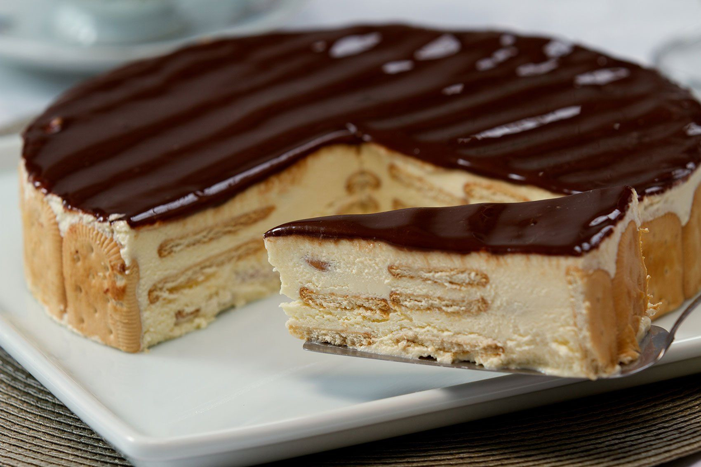

Panqueca Americana
- Farinha
- Leite
- Ovos
- Açúcar
- Fermento
Misture todos os ingredientes, despeje em uma frigideira quente e vire a panqueca após criar bolhas. Depois é só servir com alguma calda

Pudim
- Leite Condensado
- Leite Integral
- Ovos
- Açucar (calda)
Acrescente o leite condensado, o leite e os ovos no liquidificador. Após misturar bem, reserve na geladeira com o açucar caramelizado em uma forma de pudim. Assim que esfriar, estará pronto.

Torta Alemã
- Creme de leite
- Gemas
- Açúcar
- Manteiga
- Biscoito
- Chocolate
Junte os ingredientes para fazer o creme. Depois, em um pote, alterne entre biscoito e creme. Finalize com o chocolate derretido.